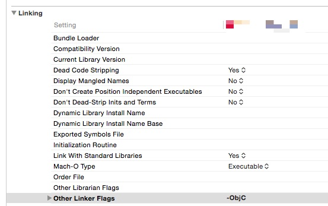
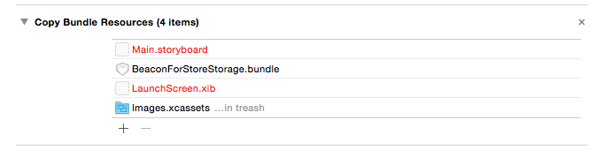

Integrating the SDK with your Xcode project Document
Hardware & software requirements
The Neerby SDK uses Bluetooth 4.0 BLE (Bluetooth Low Energy) and thus is only available on the following devices:
- iPhone 4S and up
- iPod Touch 5th generation and up
- iPad 3rd generation and up
- iPad mini (all versions)
Minimum iOS target : iOS 7
Xcode 6 or higher is required for development
The Neerby SDK supports App Transport Security, no exception is required
Installation
You must perform the following tasks to integrate the Neerby SDK with your application:
- Get your application ID
- Import required frameworks & BeaconForStoreStorage.bundle manually or using Cocoa Pods
- Configure application modes
- Allow location usage
- Code-level integration
Get your application ID
In order to use the SDK you must know the application ID that is tied to your Neerby account.
Using the web interface
- Go to https://manager.neer.by
- Log-in with your Neerby account
- Go to the “Applications” section
- Select your application ID
Using Neerby Manager
- Install the Neerby Manager app from the App Store
- Log-in with your Neerby account
- Go to the “Applications” section
- Tap on your application
- Use the “Share” button on the “Application ID” section to send the application ID to yourself as an email.
Adding the files manually
Use the following instructions to manually add the SDK to your project
Import frameworks
- Download the lastest version from Git Hub
- Extract the zip archive
- Drag & drop the BeaconForStoreSDK.framework onto your project
- Check the “Copy items if needed” box
- Add the Framework to your application target
- Click “Finish”
Add linker flags
- Open Project Settings -> Build Settings
- Scroll to the “Linking” section
In “Other Linker Flags” add “-ObjC” (this setting is case-sensitive) and “-lsqlite3”

Import BeaconForStoreStorage.bundle
- Drag & drop the BeaconForStoreStorage.bundle onto your project
- Check the “Copy items if needed” box
- Add the bundle to your application target
- Click “Finish”
- Check if the bundle appears in the “Copy File” step of your application target

Use Cocoa Pods
- Add pod ‘BeaconForStoreSDK’ to the “target” section of your podfile
- Run the pod install command
Configure application modes
To be able to track the beacons even when in background mode, you must enable background modes in your application.
- Select your project in the Project navigator
- Select your application target
- Select the “Capabilities” tab
- Turn on “Background Modes”
- Check the “Background fetch” mode

The application will be started by iOS when entering a geofence region or detecting an iBeacon, thus the didFinishLaunchingWithOptions: method from your app delegate will be called.
So if your app calls a tagging / analytics tool (Flurry, Google Analytics…) from this method, your metrics will be eroneous. You should use the ‘applicationWillEnterForeground’ delegate method to track application launches instead.
Add keys to Info.plist
Starting with iOS8, you must add a key to your Info.plist to be able to get the user location.
- Open your Info.plist file
- Add a NSLocationAlwaysUsageDescription key
- Set its value to a string describing the reason for accessing the user’s location information
Please see this document for more information
Starting with iOS 10 (and app compiled with the Xcode 8 toolchain) you must explain why you app uses Bluetooth otherwise the binary is rejected on iTunes Connect
- Open your Info.plist file
- Add a NSBluetoothPeripheralUsageDescription key
- Set its value to a string describing the reason for accessing Bluetooth